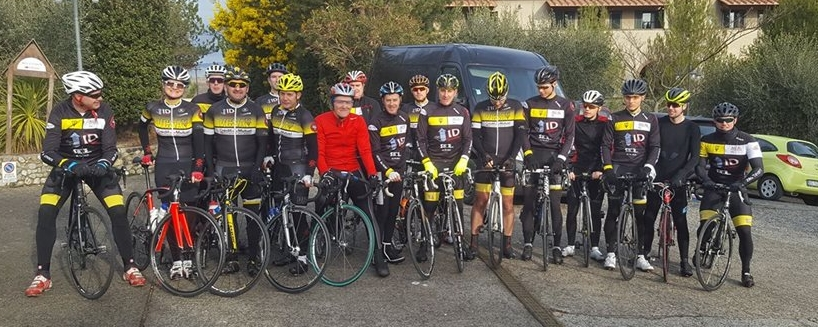

Nous rejoindre
Féru de vélo, sundgauvien (ou non) et à la recherche d'un club, n'hésite pas à venir nous rencontrer! Le mieux, c'est de le faire sur le vélo : en nous rejoignant un mercredi (ou samedi, ou dimanche) à un entraînement.
Le club accueille également les jeunes coureurs, qui pourront rejoindre l'école de cyclisme (7-14 ans).
Pour en savoir plus sur les horaires d'entraînement ou les modalités à suivre pour nous rejoindre, il y a le forum. Vous pouvez également nous contacter par mail à l'adresse vcsaltkirch@gmail.com.
